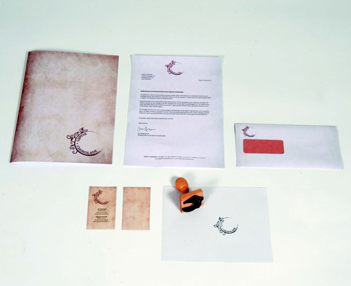
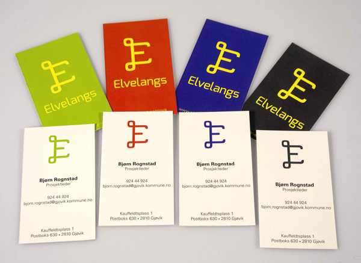
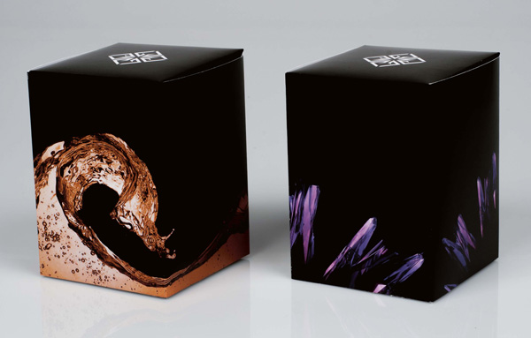

STRATEGISK DESIGN
Om emnet: Studenten skal etter avsluttet emne ha grunnleggende kunnskap om strategisk design i form av merkevarebygging og bedriftsprofilering. Studentene skal kunne anvende denne kunnskapen på en metodisk måte for å initiere, utvikle og implementere et visuelt identitetsprogram via en rekke ulike kommunikasjonsflater for en bedrift, institusjon eller event. Studenten skal også kunne referere til kritisk teori om merkevarens funksjon i det moderne forbrukersamfunnet
Prosjekter:
Gjøvik Chocolade
Elvelangs
Gjøvik glassverk
